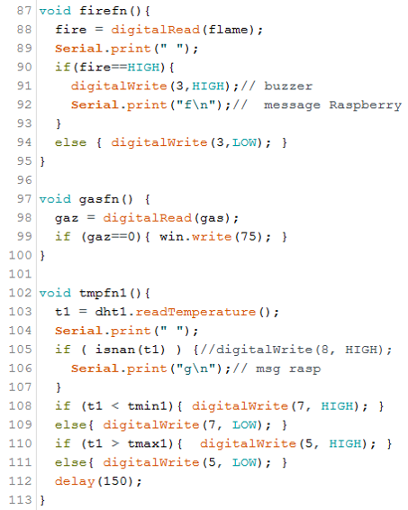

Conception de l’interface:
| Les boutons |  |
Label | Image de l’application sur Mobile |
|---|
Dans ce chapitre nous présenterons les étapes de la conception et de la réalisation du projet. La réalisation de la maquette qui représente une ferme intelligente ainsi que la programmation commandée par un Smartphone sont l’objet de ce chapitre. L’application de commande Android permet à l’utilisateur de contrôler le système à distance d’une manière fiable et automatique. Pour la création de l’application, on à choisir l’outil informatique « MIT App Inventor » qui a une interface facile à utilisé.et qui permettra de contrôler les dispositifs de la ferme par Bluetooth.
| Les boutons | |
Label | Image de l’application sur Mobile |
|---|
 |
|---|
 |
 |
|---|
A travers ce projet nous avons acquis une bonne expérience pour la création d’une application Android avec l’environnement MIT App tout en acquérant de meilleurs connaissances de l'agriculture intelligente, ce qui pourrait nous être fortement utile pour notre vie professionnelle future. Nous avons aussi pu mettre en valeur les connaissances reçues en électronique et en informatique, également on a pu appliquer la programmation et la vision artificielle.
Configuration d’un système intelligent basé sur des capteurs pour l'acquisition de données agroenvironnementales.
Elargir la portée du fonctionnement du système par l’utilisation d’autre type de communication : GSM, radiofréquence.
Améliorer la sécurité de l’application en enregistrant des comptes.